소환 흐름 나 「이젤 캔버스」 — 수정 스토리보드 + 중복 → 별가루
PD가 고른 나 · 이젤 캔버스를 다듬은 스토리보드입니다. 무대를 흐린 도서관 + 등불빛 아틀리에로, 이젤은 나무 결 · 받침 · 물감 튜브, 캔버스는 리넨 결 · 옆면 두께가 있게 다시 그렸습니다. 새로 넣은 상태는 ⑤ 1회에서 중복이 나올 때와 ⑥ 10회 결과의 중복: PD 규칙대로 중복 아이는 재료(별가루)만 줍니다. 별가루 수치는 scripts/game_data.gd DUPE_DUST(SS 120 · S 30 · A 2 · B 1), 아이콘은 게임과 같은 색가루 그림을 금빛으로 물들인 별가루(RewardPopup.star_dust_icon)입니다.
지금 게임
도서관 원을 칠하고 등급별 등장 → 10회 결과 카드. 중복 아이는 카드 오른쪽 위 작은 「별가루 +N」 딱지 한 줄뿐이고, 별가루가 모이는 순간이 보이지 않습니다(연출이 끝난 뒤 보상 팝업에 합계만).
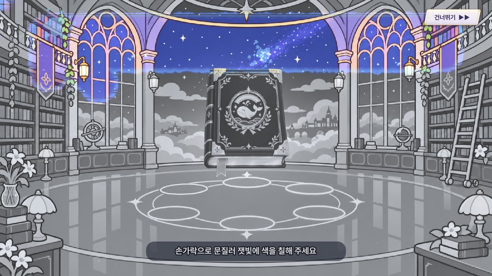
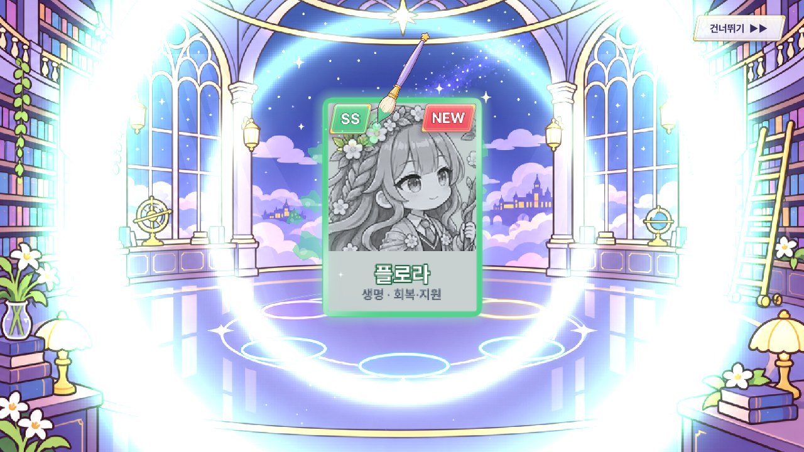
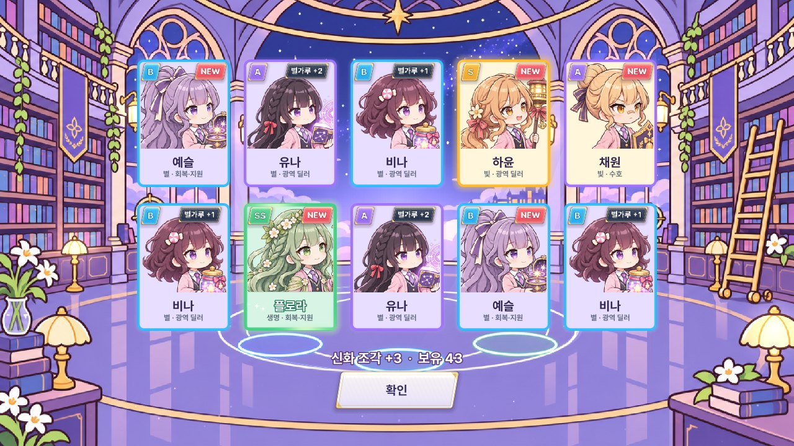
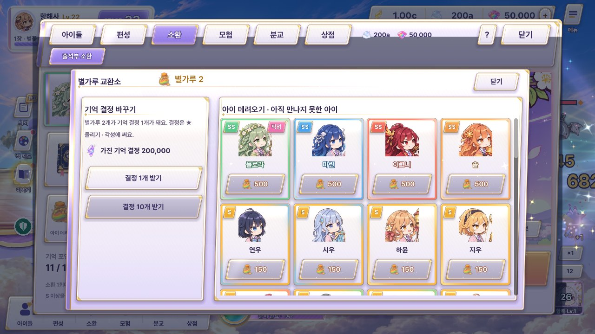
원래 시안 나 (비교용)
① 칠하기 ② 등급 물감 ③ SS 손글씨 ④ SS 등장 ⑤ 액자 벽 + 신화 조각 병. 캔버스 · 이젤이 평면 색 판이었고, 중복 아이 처리가 없었습니다. 움직이는 원본: feedback70/summon/index.html
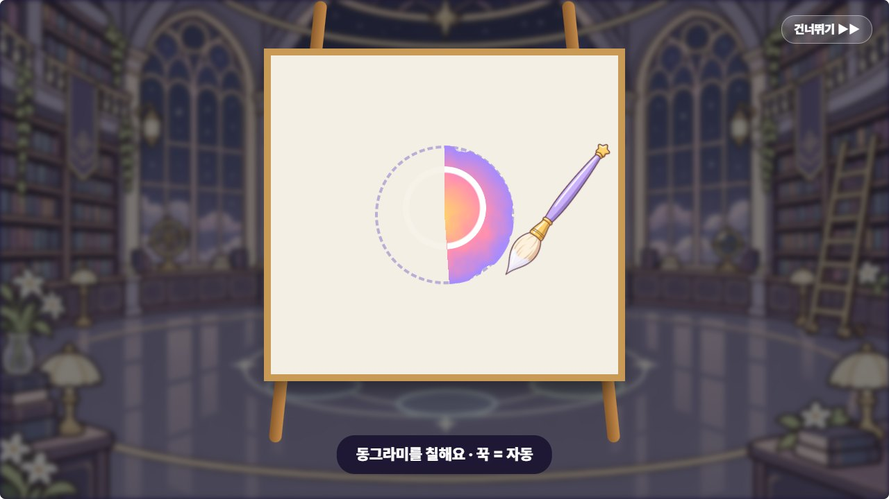
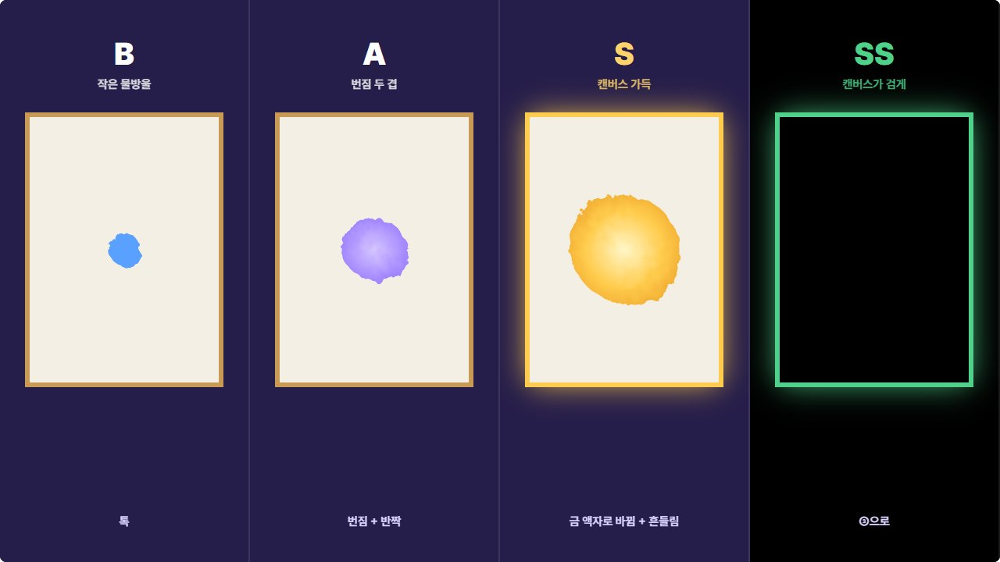
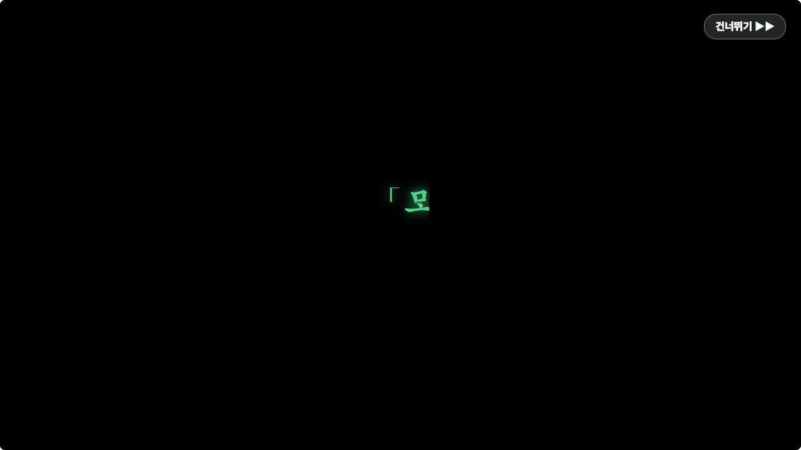
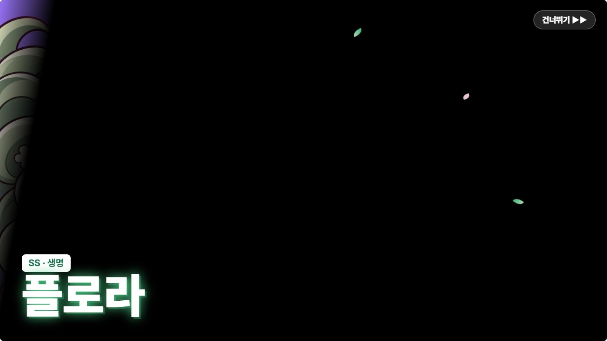
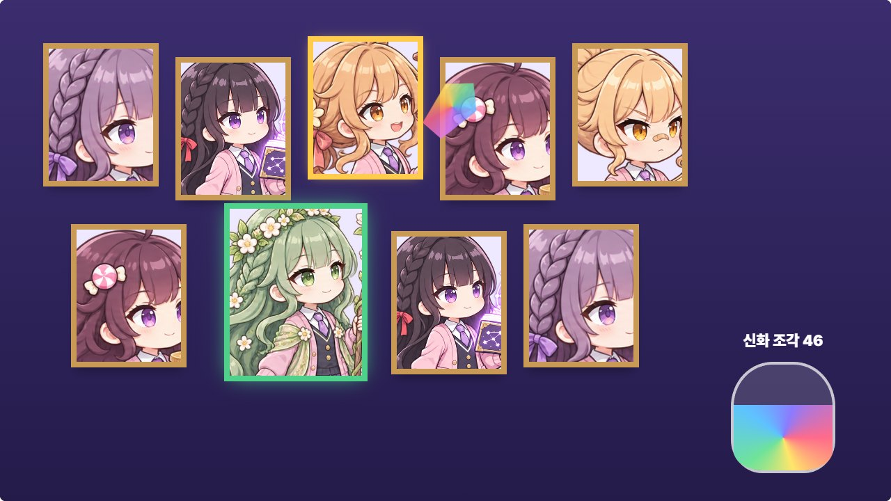
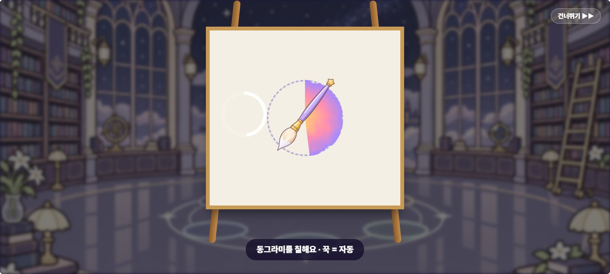
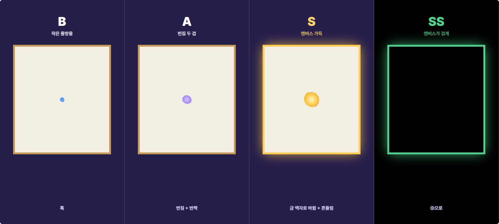
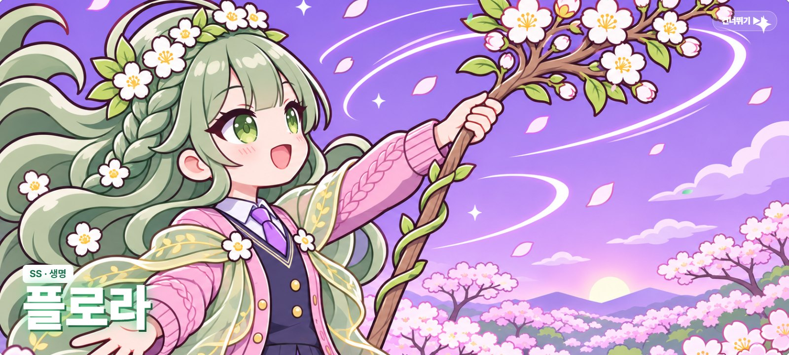
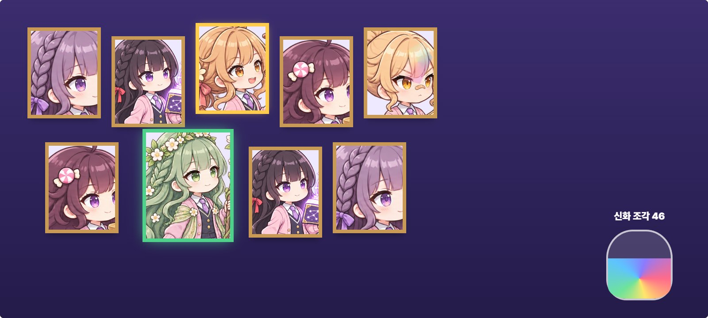
1. 수정 스토리보드 ① ~ ④
① 칠하기 (#23)
리넨 캔버스 가운데 점선 동그라미만젖은 붓이 원을 돌며 칠하고, 꾹 누르면 바깥 흰 고리가 차오르며 저절로 칠해짐
② 등급마다 커지는 물감 (#26)
물감 크기 · 액자 색 · 흔들림으로 단계가 바로 보임SS는 금이 간 틈으로 속성 색(생명 초록) 빛이 새어 나옴
③ SS: 검은 캔버스 + 손글씨 대사 (#27)
대사가 손글씨로 써진 뒤 속성 물감이 흘러내림매번 나오고, 오른쪽 위 「건너뛰기」로 바로 결과로
④ SS 등장 — 붓 한 번으로 그림이 칠해짐
젖은 붓이 왼쪽에서 오른쪽으로 쓸며 그림을 드러냄다 칠해지는 순간 생명 초록 충격파 · 잎 입자, 이름 띠는 속성 색
2. 새 상태 ⑤ — 1회 소환에서 중복이 나올 때
하윤(S) 중복 → 별가루 +30
S 등장(금 액자)까지는 똑같이 보여 줘 누가 나왔는지는 알게 하고, 곧바로 캔버스 오른쪽 위에 「중복」 밀랍 도장이 쾅 찍힙니다. 그림이 위에서부터 금가루로 바스러지고(금빛 경계선이 아래로 내려감), 알갱이가 곡선을 그리며 옆 탁자의 별가루 병으로 쏟아져 모래가 차오르고, 병 위 「+30」과 보유 수(2 → 32)가 함께 오릅니다. 캔버스에는 금가루 더미 + 「+30」만 남고(아이는 들어오지 않음), 아래에 「확인 · 별가루 교환소」 안내가 뜹니다.
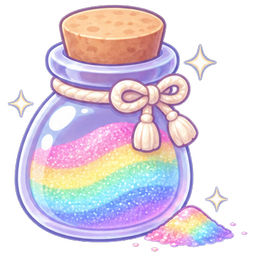
하윤 · S 중복0.0s 금 액자 등장 → 1.0s 「중복」 도장 → 1.7~3.9s 금가루로 바스러지며 병으로 → 4.4s 안내등급이 높을수록 별가루가 많아 알갱이 수 · 병이 차는 양이 커집니다 (B +1 · A +2 · S +30 · SS +120)
3. 새 상태 ⑥ — 10회 결과: 액자 벽 + 중복 → 별가루 + 신화 조각
새 아이 3 · 중복 7 → 별가루 +38 · 신화 조각 +3
열 장이 액자 벽에 걸리면 새로 만난 아이에게 NEW 리본이 붙고, 중복 액자에는 「중복」 도장이 차례로 찍힙니다. 이어서 중복 액자들이 한 장씩 금가루로 바스러져 왼쪽 아래 별가루 병으로 흘러들고(병 위 +38, 보유 2 → 40), 액자 안에는 금가루 더미와 「+1 · +2 · +30」이 남아 누가 무엇으로 바뀌었는지 한눈에 보입니다. 마지막으로 무지개 신화 조각이 오른쪽 아래 병에 떨어지고(43 → 46), 아래에 합계 한 줄과 「다시 10회 · 확인」이 뜹니다.
0.3s NEW 리본 → 0.9~1.6s 「중복」 도장 → 1.5~4.1s 한 장씩 금가루로 바스러져 별가루 병으로 → 4.9s 신화 조각 → 6.2s 합계예시 결과: 예슬 B · 채원 A · 플로라 SS가 새로, 유나 A ×2(+2씩) · 비나 B ×3(+1씩) · 하나 B(+1) · 하윤 S(+30)가 중복 = 별가루 +38